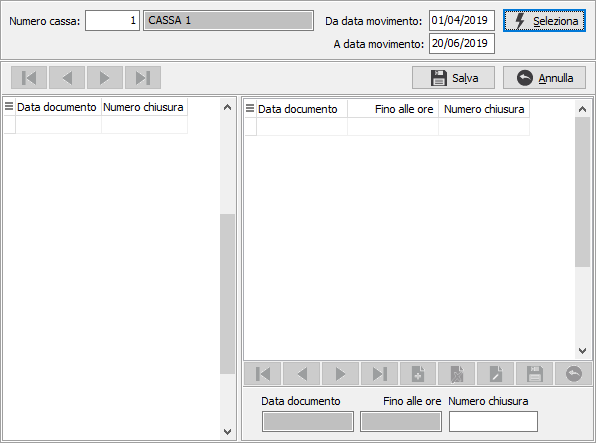
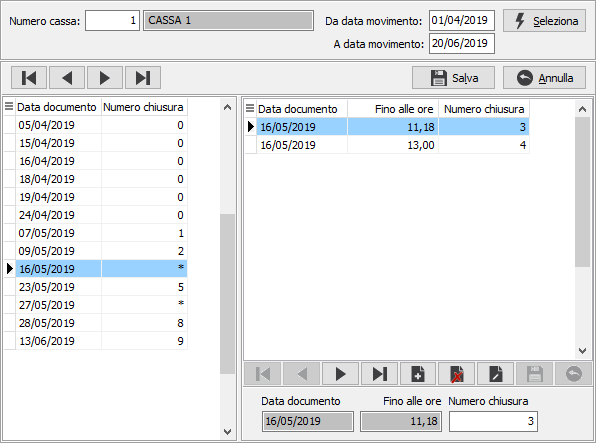

Gestione numero chiusure giornaliere
La procedura consente di verificare, inserire e modificare il numero della chiusura. Nella parte alta della finestra sono presenti i parametri di selezione: cassa e periodo da analizzare; premendo Seleziona vengono mostrati i dati nella parte sottostante.

Nella parte sinistra sono riportate le date per cui presenti documenti di vendita in base alla selezione indicata con il relativo numero chiusura; nel caso in cui nel giorno siano presenti più numeri chiusura viene riportato un *. Nella parte destra sono riportate le singole chiusure con l’indicazione dell’ora. Nel caso in cui non sia presente alcun numero chiusura deve essere inserita l’ora e il numero, alla pressione del pulsante Salva, previa conferma, tutti i documenti di vendita per la data fino all’ora indicata assumeranno il numero chiusura specificato.
